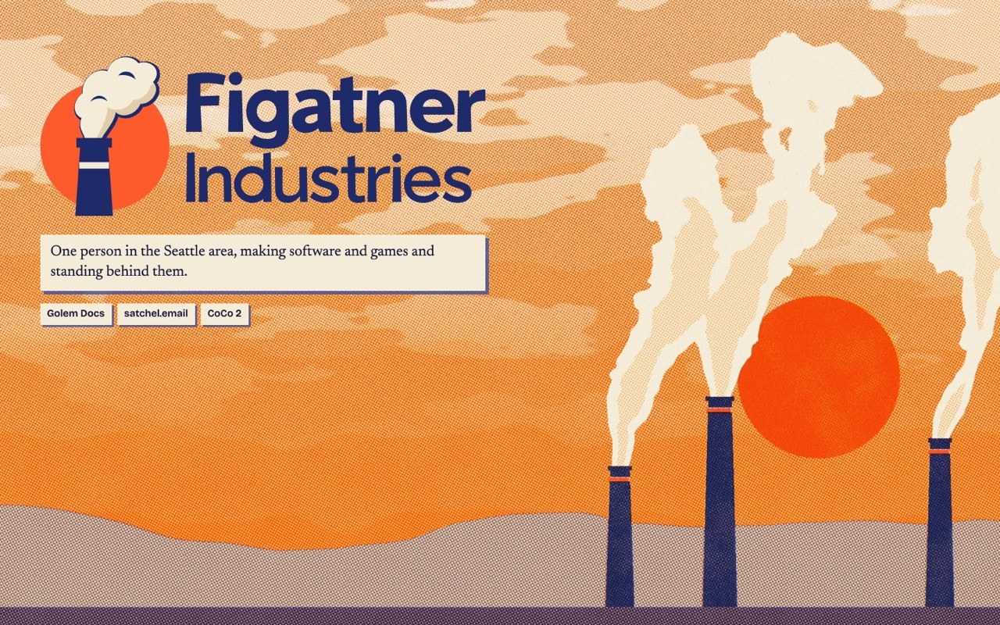
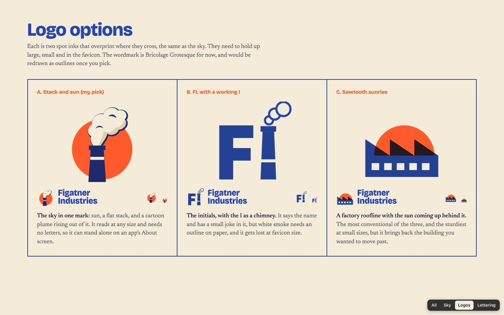
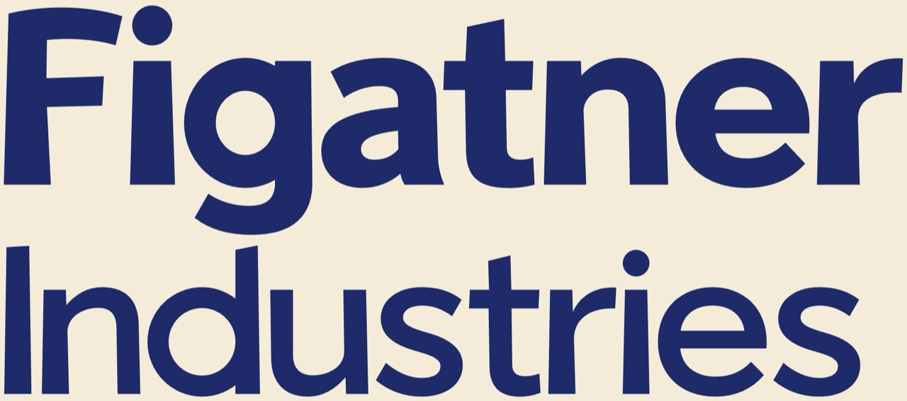

The sun, sky, clouds and smoke on their own. The page talks about building first and the products second, with a new logo and new type. The day passes as you scroll.

The site, with the writing about building up front and real product images below.
Try: sweep your cursor quickly through a plume, and scroll all the way down to reach night.
Three options, shown large, beside the name, and at favicon size. The Sky page uses A.

The hand-drawn name, in round letters, spaced optically. Click a letter to swap its drawing.
Round two: Banner, Windows, Plant Menu. Round one: Foundry, Charter, Shift Board, The Works.